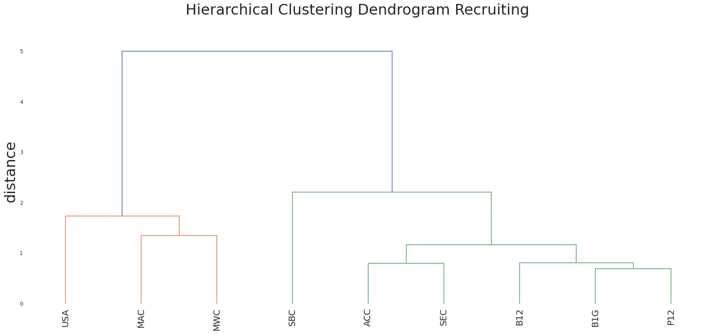
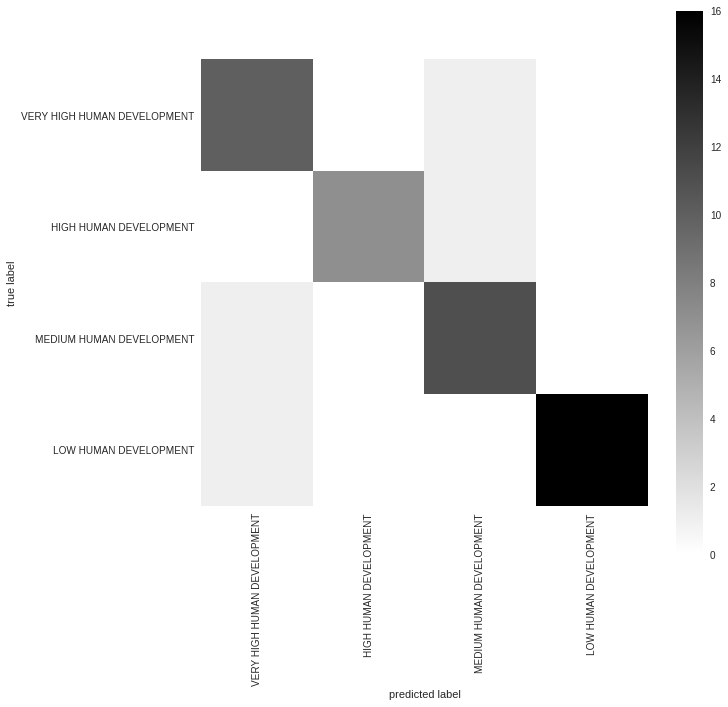

The first chart tracks the amount of energy generated by renewables worldwide.
My second chart looks the amount of coal used in electricity generation across five US states.
This first graph depicts outstanding IMF credit
- replicating a chart from
this FT article
The second chart shows this lending as a ratio of global Gross Domestic Product
When adjusting for GDP, 1984 appears to actually be the more risky year for investing.
The two charts below show the same data, but the added layer of visual encoding in the second one, colouring by position, gives more information without making the chart harder to read.
This site listed all colours supported in HTML and CSS,
with RGB values to plot,
and HEX codes to format the chart.
Here is the link to the Colab Notebook
Pay Growth
Economic Inactivity
Tourism
Here is the link to the Colab Notebook
Base Map
The below map presents a breakdown of internal tax revenues collected by the Irish government in 2021, and highlights the key role of Dublin in the Irish economy.
At the Festival of Economics the difference in public and private sector wages was discussed, public wages are not inflating at the rate of private wages, due to them being linked to government spending.
With an increasing number of vacancies, there was a suggestion that we may see labour move from the public to the private market.
These two advanced charts show different ways of presenting the same data.
In American college football, there are two different groups of sports conferences with different levels of finance, called the G5 and P5.
Testing several variables, I have found that spending on recruiting is where the conference cluster into their two groups most accurately.
Using HDI variables, I wanted to try and classify countries into their designated UN level of development only using the components of HDI.
My classification had a 91.7% accuracy score, though some of the errors were predicting a label of very high levels of development for low human development countries.